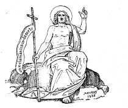

A library of fathers of the holy Catholic church: anterior to the division of the East and West (1838-1881) List of titles.
A library of fathers of the holy Catholic church: anterior to the division of the East and West / translated by members of the English Church [Ed. by E.B. Pusey... [et al]] . 51 vols (?) . Octavo. (23cm). Published by J. G. & F. Rivington, London: John Henry Parker, Oxford.

Prospectus
1. Saint Augustine. The confessions. (1838) Tr. Pusey. 363 pp.
2. Saint Cyril, Bishop of Jerusalem. The cathechetical lectures. (1838) Tr. R. W. Church.
312 p.
3. Saint Cyprian. The treatises. (1839). Tr. Charles Thornton & J.H.Newman.
318 p.
4. Saint John Chrysostom. The homilies ... on the first epistle of St. Paul the Apostle to the Corinthians. Hom.
1-24 (1839)
Tr. Hubert Kestell
Cornish & John Medley. xiii, 336p
5. Saint John Chrysostom. The homilies on the First Epistle to the
Corinthians. Hom. 25-44 (1839)
Tr. Hubert Kestell
Cornish & John Medley. 318p
6. Saint John Chrysostom. Commentary on Galatians, and homilies on Ephesians.
(1840). Tr William John Copeland. 401 p.
7. Saint John Chrysostom. The homilies on Romans. (1841). Tr. C.Marriott. 530 p.
8. Saint Athanasius. Select treatises in controversy with the Arians, Pt. 1
(1842). Tr. J.H.Newman. (See also #19)
9. Saint John Chrysostom. The homilies on the statues. (1842). Tr. Edward Budge.
399 p.
10. Tertullian. Vol. 1: Apologetic and practical treatises. (1842). Tr. C.
Dodgson. 531 p.
11. Saint John Chrysostom. The homilies on St. Matthew, pt. 1 of 3. Homilies 1-25
(1843) Tr. George Prevost. 384 p. (See also #15, 34)
12. Saint John Chrysostom. The homilies on Timothy, Titus, and Philemon. (1843)
Tr. James Tweed. 383 p.
13. Saint Athanasius. Historical tracts. (1843) Tr. Miles Atkinson. 321 p.
14. Saint John Chrysostom. The homilies on Philippians, Colossians, and
Thessalonians. (1843) Tr. W.C.Cotton & James Tweed. 558 p.
15. Saint John Chrysostom. The homilies on St. Matthew, pt. 2 of 3. Homilies 26-58
(1843) Tr. George Prevost. 797 p. (See also #11, 34)
16. Saint Augustine. Sermons on selected lessons of the New Testament, v.1. S. Matthew, S. Mark, S. Luke
(1844). Tr. R.G. Macmullen. 485 p. (See also #20)
17. Saint Cyprian, and Saint Pacian. The epistles of S. Cyprian...with the Council of Carthage, on the baptism of heretics.
With the
extant works of S. Pacian: 3 Epistles to Sympronian, Exhortation to Repentance,
On baptism.
(1844)
Tr. H. Carey & C.H.Collyns. 422 p. pp.319ff are Pacian.
18. Saint Gregory the Great. Morals on the book of Job. Pt. 1 of 4. Parts I and II/Books 1-10
(1844). Tr. Anon. 621 p. (See #18,21,23,31)
19. Saint Athanasius. Select treatises in controversy with the Arians, Pt. 2
(1842). Tr. J.H.Newman. (See also #8)
20. Saint Augustine. Sermons on selected lessons of the New Testament, v.2. S. John, Acts, Romans, I Corinthians, Galatians, Ephesians, Philippians, I Thessalonians, I Timothy, Titus, James, I John
(1845). Tr. R.G. Macmullen. 487 p. Both=1011 p. (See also #16).
21. Saint Gregory the Great. Morals on the book of Job. Pt. 2 of 4. Parts III and
IV and Books 11-22
(1845). 567 p. (See #18,21,23,31)
22. Saint Augustine. Seventeen short treatises. (1847) Tr. C.L.Cornish & H.
Browne. 670 p.
23. Saint Gregory the Great. Morals on the book of Job. Pt. 3 of 4. vol. 3. pt. 1. Part
V Books 23-29
(1847). Tr. C. Marriott.
(See
#18,21,23,31)
24. Saint Augustine. Expositions on the Book of Psalms. v. 1 of 6. Psalms 1-36 (1847)
Tr. E.B.Pusey, H. Walford, Charles Marriott. 420 p. 6 vols.
v. 1. Psalms 1-36.--v. 2. Psalms 37-52.--v. 3. Psalms 53-75.--v. 4. Psalms 76-101.--v. 5. Psalms 102-125.--v. 6. Psalms 126-150
(See #24, 25, 30, 32, 37, 39)
25. Saint Augustine. Expositions on the Book of Psalms. v. 2 of 6. Psalms 37-52.
(1847) Tr. E.B.Pusey, H. Walford, Charles Marriott. 6 vols. 408 p.
(See #24, 25, 30, 32, 37, 39)
26. Saint Augustine. Homilies on the Gospel according to St. John, and his first Epistle.
Pt. 1 of 2. Hom. 1-43, S. John 1-8. (1848) Tr. H. Browne.
568 p. 2
vols. (See #26,29)
27. Saint John Chrysostom. The homilies on the Second Epistle of St. Paul the Apostle to the
Corinthians (1848) Tr. J. Ashworth. 363 p.
28. Saint John Chrysostom. The homilies on the Gospel of St. John. Pt. 1 of
2. Hom. 1-41. (1848). Tr. G.T.Stupart. 360 p. (See 28, 36).
29. Saint Augustine. Homilies on the Gospel according to St. John, and his first Epistle.
Pt. 2 of 2. Hom.44-124, S, John 9-21 and Hom. 1-10, 1
S.John (1849)
Tr. H. Browne. 702 p. Both=1288 p. 2 vols. (See #26,29)
30. Saint Augustine. Expositions on the Book of Psalms. v. 3 of 6. Psalms 53-75.
(1849) Tr. E.B.Pusey, H. Walford, Charles Marriott. 533 p. 6 vols.
(See #24, 25, 30, 32, 37, 39)
31. Saint Gregory the Great. Morals on the book of Job. Pt. 4 of 4. vol. 3. pt. 2.
Books 30-35 (1850). (See #18,21,23,31)
32. Saint Augustine. Expositions on the Book of Psalms. v. 4 of 6. Psalms 76-101.
(1850) Tr. E.B.Pusey, H. Walford, Charles Marriott. 6 vols.
(See #24, 25, 30, 32, 37, 39)
33. Saint John Chrysostom. The homilies on the Acts of the Apostles. Pt. 1 of
2. Hom. 1-28. (1851) Tr. Charles Marriot. (See 33, 35)
34. Saint John Chrysostom. The homilies on St. Matthew, pt. 3. Homilies 59-90
(1851) Tr. George Prevost. (See also #11, 15). 3 vols=1206 p.
35. Saint John Chrysostom. The homilies on the Acts of the Apostles. Pt. 2 of
2. Homilies 29-55. (1851) Tr. Charles Marriot. Both=740 p. (See 33, 35)
Subscriber information at the back of the
volume.
36. Saint John Chrysostom. The homilies on the Gospel of St. John and his
first epistle. Pt. 2 of 2. Hom. 42-88. (1848). Tr. G.T.Stupert. Both=1288 p.(See 28, 36).
37. Saint Augustine. Expositions on the Book of Psalms. v. 5 of 6. Psalms 102-125
(1853) Tr. E.B.Pusey, H. Walford, Charles Marriott. 547 p. 6 vols.
(See #24, 25, 30, 32, 37, 39).
Volume has information about the series at the end.
38. Saint Athanasius. The festal epistles. (1854) Tr. Henry Burgess. 163 p.
39. Saint Augustine. Expositions on the Book of Psalms. v. 6 of 6. Psalms 126-150.
(1847) Tr. E.B.Pusey, H. Walford, Charles Marriott. 548 p. 6 vols.
(See #24, 25, 30, 32, 37, 39)
40.[42] Saint Justin Martyr. The works now extant. (1861) [Dr. Williams
copy has 1892] Tr. G.J.Davie. 284
p.
41.[40] Saint Ephrem the Syrian. Select works. (1847) Tr. J.B.Morris. 449 p.
42.[41] Saint Irenaeus. Five books ... against heresies. (1872) Tr. John
Keble. 594 p. Published posthumously.
43. Saint Cyril of Alexandria. Commentary on the Gospel according to S. John.
Pt 1 of 2 (1874) Tr. P.E.Pusey. (See 43, 48)
44. Saint John Chrysostom. The homilies ... on the Epistle of S. Paul the Apostle to the Hebrews.
(1877). Tr. P.E.Pusey/John Barrow. 423 p.
45. Saint Ambrose. Letters. (1881). Tr. Anon. 521 p.
46. Saint Athanasius. Later treatises of S. Athanasius, Archbishop of Alexandria, with notes: and an appendix on S. Cyril of Alexandria and
Theodoret
(1881). Tr. William Bright. 237 p.
47. Saint Cyril of Alexandria. Five Tomes against Nestorius; Scholia on the Incarnation; Christ is One; Fragments against Diodore of Tarsus,
Theodore of Mopsuestia, The Synoudiasts.
(1881) Tr. Anon. 406 p.
48. Saint Cyril of Alexandria. Commentary on the Gospel according to S. John.
Pt 2 of 2 (1885) Tr. T. Randell (See 43, 48)
[There are supposedly 51 volumes, according to the British Library. According to the NPNF preface there are 48, and there are 48 in the set at Dr. Williams Library. However some volumes also existed in a Latin or Greek version, with the same series title page (e.g. Augustine: Confessions, Chrysostom on Romans, Chrysostom on 1 Cor, Chrysostom on 2 Cor). These really belong to the Bibliotheca Patrum Ecclesiae Catholicae series, and were not supplied to subscribers of the English version but are included in the run in some libraries, such as Cambridge University Library. Also note that the date of publication on the series title page is sometimes not the same as that on the volume title page!].
Note that vols. 40, 41, and 42 in this list are numbered 42, 40 and 41 in Dr. Williams Library. In this case, the volume number has been written in pencil inside, and it seems quite possible that this is the correct numbering.
Note to the online text. This collection has been made by searching for forgotten English translations of the fathers not available online. In common with most people, I had presumed until recently that all the works in this series had been reedited or reprinted as part of the later Ante-Nicene Fathers (etc) series. On discovering the existence of vol. 45, containing all the letters of Ambrose, it became clear to me that this was not so, and that the series was still active later than anyone had realised. The above list is a work in progress. It has been compiled from library catalogues through Copac, and will be extended as more information becomes available. I can already see works by Pacian and Cyril of Alexandria which are not part of the ANF.
Roger PEARSE
Ipswich
23rd September 2003
After page 740 of vol. 35 (Chrysostom on Acts, vol. 2), there is the following information:
PUBLICATION OF THE ORIGINAL TEXTS.
THE plan of publishing some at the least of the originals of the Fathers, whose works were translated in the "Library," has been steadily kept in view from the first, and Collations have now been obtained, at considerable expense, at Rome, Paris, Munich, Vienna, Florence, Venice, and the Editors have materials for. the principal works of S. Chrysostom, for S. Cyril of Jerusalem, S. Macarius, Tertullian, and S. Augustine's Homilies on the Psalms. Collations are also being made for S. Gregory of Nyssa.
Of these, they have begun with S. CIIRYSOSTOM on St. Paul, the Rev. F. Field, M.A. Trin. Coll. Cambridge, having united with them in this great task. He has already edited the Homilies on the Epistles to the Corinthians, and is now carrying through the press those on the Epistle to the Romans.
All the best MSS. known in Europe have been collated for this edition, and the text has been considerably improved, as that of the Homilies on S. Matthew had already been by the same Editor *. There is then every prospect that the English Edition of S. Chrysostom will be again the best extant.
All the extant European MSS. have likewise been collated for S. CYRIL of JERUSALEM and TERTULLIAN. Of these S. CYRIL is nearly ready for the press.
The publication of Tertullian has been delayed, because it was discovered that the result of the collations would be to make the text more genuine, yet more difficult than before. M. Heyse, who was collating for the Editors at Rome, being requested to search for the MS. or MSS. which F. Ursinus alleged that he had used, discovered the original papers of Ursinus, in which it appeared that the readings which Rigaltius adopted from him, were in fact only ingenious conjectures by Ursinus himself, which he gave out as collations of M SS. The Editor of the treatises of Tertullian already translated, being thus thrown back upon the older text, found reason to think that in those cases the readings, which Ursinus had corrected, although at first sight obscurer, were (he believes with one exception) the most genuine.
With regard to S. Augustine, there seemed reason to think that there was very little or nothing left to be done for the improvement of the text after the admirable labours of the Benedictines. Some collations which the Editors obtained, through their laborious Collator, from very ancient MSS. of his Epistles at Monte-Cassino, confirmed this impression. And this is again renewed by some Collations on the Psalms, which the same Scholar has made for them from a very ancient Codex rescriptus in the [p.2] Vatican, Still, besides the improvement of the text of any Father, if possible, the Editors had the distinct object of making single valuable works accessible to Clergy who could not afford to purchase his whole works. They, therefore, propose to publish S. Augustine's Homilies on the Psalms, since they are not only a deep and valuable Commentary on a portion of Holy Scripture, which forms so large a part of our public devotions, but contain, perhaps, more of his practical theology and hints as to the inward spiritual life, than most of his works. Besides the above Vatican MS, Collations are being made of some of the Bodleian MSS, which have not been used, since even an occasional improvement of the collocation, or still more occasional of the text itself, is not without interest in a work of such exceeding value.
Large Collations had been made for S. MACARIUS, and it seemed almost ready for publication, when their indefatigable Collator, M. Heyse, discovered in the Vatican an entirely different recension. In accordance with the rules of the Vatican, access was, upon this, denied them to all MSS. whatever of S. Macarius, and the edition has consequently been, for the time, suspended.
For S. GREGORY OF NYSSA considerable preparations have been made, although nothing is yet ready for the press.
For these undertakings, the Editors have only their private resources, (any profits from the translations having been much more than absorbed by the Collations.) The present number of Subscribers to the original texts is only 421. Works printed in England have, owing to the expense of labour here, but a limited circulation abroad. If then it is wished that the publication of the originals should proceed more rapidly, there must be additional Subscribers.
* Mr. Field's edition of the Homilies on S. Matthew is supplied to Subscribers to the Library at the same reduced rate as the other volumes. [Publisher.]
[p.3]
UNDER THE PATRONAGE OF
WILLIAM, LATE LORD ARCHBISHOP OF CANTERBURY,
FROM ITS COMMENCEMENT A.D. 1836,
UNTIL HIS GRACE'S DEPARTURE IN PEACE A.D. 1848.
----------
A
LIBRARY OF FATHERS
OF THE
HOLY CATHOLIC CHURCH,
ANTERIOR TO THE DIVISION OF THE EAST AND WEST.
--------
TRANSLATED BY MEMBERS OF THE ENGLISH CHURCH,
WITH NOTICES OF THE RESPECTIVE FATHERS, AND BRIEF NOTES BY THE EDITORS,
WHERE REQUIRED, AND SUMMARIES OF CHAPTERS AND INDICES.
--------
EDITED BY
THE REV. E. B. PUSEY, D.D.
Regius Professor of Hebrew, Canon of Christ Church, late Fellow of Oriel, College,
THE REV. JOHN KEBLE, M.A.
Late Professor of Poetry, and Fellow of Oriel College,.
THE REV. C. MARRIOTT, B.D.
Fellow of Oriel College.
--------
A PUBLICATION, answering to the above title, appeared to the Editors calculated to answer many and important ends, and to supply considerable wants, some peculiar to our own Church and times, others more general.
Their chief grounds for thinking it very desirable were such as the following:----
1. The great intrinsic value of many of the works of the Fathers, which are, at present, inaccessible, except to such as have large libraries, and are familiar with the languages in which they are written; and this the more, since a mere general acquaintance with the language will not enable a person to read with ease many of the Fathers. E. g. Knowledge of Latin alone will not suffice to read Tertullian: and in cases less strong, ecclesiastical language and peculiarity of style will often present considerable difficulties at first.
2. The desirableness of bringing together select works of different Fathers. Many who would wish to become acquainted with the Fathers, know not where to begin; and scarcely any have the means to procure any great number of their works. Editions of the whole works of a Father, (such as we for the most part have,) are obviously calculated for divines, not for private individuals: they furnish more of the works of each Father than most require, and their expense precludes the acquisition of others.
3. The increased demand for sacred reading. The Clergy of one period are obviously unequal to meet demands so rapid, and those of our day have additional hindrances, from the great increased amount of practical duties. Where so much is to be produced, there is of necessity great danger that [p.4] much will not be so mature as, on these subjects, is especially to be desired. Our occupations do not leave time for mature thought.
4. Every body of Christians has a peculiar character, which tends to make them look upon the system of faith, committed to us, on a particular side; and so, if they carry it on by themselves, they insensibly contract its limits and depth, and virtually lose a great deal of what they think that they hold. While the system of the Church, as expressed by her Creeds and Liturgy, remains the same, that of her members will gradually become contracted and shallow, unless continually enlarged and refreshed. In ancient times this tendency was remedied by the constant living intercourse between the several branches of the Catholic Church, by the circulation of the writings of the Fathers of the several Churches, and, in part, by the present method----translation. We virtually acknowledge the necessity of such accessions by our importations from Germany and America; but the circumstances of Germany render mere translation unadvisable, and most of the American Theology proceeds from bodies who have altered the doctrine of the Sacraments.
5. The peculiar advantages of the Fathers in resisting heretical errors, in that they had to combat the errors in their original form, before men's minds were familiarized with them, and so risked partaking of them; and also in that they lived nearer to the Apostles.
6. The great comfort of being able to produce, out of Christian antiquity, refutations of heresy, (such as the different shades of the Arian:) thereby avoiding the necessity of discussing, ourselves, profane errors, which, on so high mysteries, cannot be handled without pain, and rarely without injury to our own minds.
7. The advantage which some of the Fathers (e. g. St. Chrysostom) possessed as Commentators on the New Testament, from speaking its language.
8. The value of having an ocular testimony of the existence of Catholic verity, and Catholic agreement; that truth is not merely what a man troweth; that the Church once was one, and spake one language; and that the present unhappy divisions are not necessary and unavoidable.
9. The circumstance that the Anglican branch of the Church Catholic is founded upon Holy Scripture and the agreement of the Universal Church; and that therefore the knowledge of Christian antiquity is necessary in order to understand and maintain her doctrines, and especially her Creeds and her Liturgy.
10. The importance, at the present crisis, of exhibiting the real practical value of Catholic Antiquity, which is disparaged by Romanists in order to make way for the later Councils, and by others in behalf of modern and private interpretations of Holy Scripture. The character of Catholic antiquity, and of the scheme of salvation, as set forth therein, cannot be appreciated through the broken sentences of the Fathers, which men pick up out of controversial divinity.
11. The great danger in which Romanists are of lapsing into secret infidelity, not seeing how to escape from the palpable errors of their own Church, without falling into the opposite errors of Ultra-Protestants. It appeared an act of especial charity to point out to such of them as are dissatisfied with the state of their own Church, a body of ancient Catholic truth, free from the errors, alike of modern Rome and of Ultra-Protestantism.
12. Gratitude to ALMIGHTY GOD, who has raised up these great lights in the Church of Christ, and set them there for its benefit in all times. [p.5]
EXTRACTS FROM THE PLAN OF THE WORK.
1. The subjects of the several treatises to be published shall mainly be, Doctrine, Practice, Exposition of Holy Scripture, Refutation of Heresy, or History.
8. The Editors hold themselves responsible for the selection of the several treatises to be translated, as also for the faithfulness of the translations.
11. The originals of the works translated shall be printed*. It would be well, therefore, if Subscribers would specify, if they wish for the originals, either with or without the translations.
12. It is understood that subscriptions continue, until it be intimated that they are discontinued, and that they extend, under ordinary circumstances, to the end of each year.
14. Not more than four volumes to appear for each year: the price to Subscribers not to exceed 9s. for a closely printed 8vo of 400 pages; to the public it will be raised one-fourth. When old Translations are revised, the price will be diminished.
* The object of publishing the originals has been steadily kept in view, though delayed by difficulties, inseparable from the commencement of such an undertaking, as well as by sorrowful dispensations. Collations of MSS.at Rome, Paris, Moscow, Munich, Vienna, Florence, Venice, have now been in part obtained, in part are being made, for S. Chrysostom's Homilies on S. Paul, on the Statues, S. Cyril of Jerusalem, Macarius, Tertullian, S.Greg. Nyss. &c.
RIVINGTONS, LONDON; J. H. PARKER, OXFORD.
--------
Works already published
|
ATHANASIUS, S. |
On the Nicene Definition, Councils of Ariminum and Seleucia, and the Orations against the Arians, 2 vols. |
Rev. J.H. Newman, B.D. late fellow of Oriel. |
|
Historical Documents |
Rev. M. Atkinson, M.A. Fellow of Lincoln. |
|
|
AUGUSTINE, S. |
Confessions |
Old translation, revised by E.B.Pusey, D.D. |
|
Homilies on the New Testament, 2 vols. |
Rev. R.G. Macmullen, M.A. late fellow of C.C.C. |
|
|
On the Psalms, Vols. 1. 2. |
partly by Rev. J.E.Tweed, Chaplain of Christ Church |
|
|
On the Psalms, Vol. 3 |
T.Scratton, B.A. hC.ch |
|
|
On the Psalms, Vol. 4 |
Rev. C.E. Prichard, M.A. Fellow of Balliol. |
|
|
Practical Treatises |
( Rev C.L.Cornish, M.A. late Fellow of Exeter |
|
|
On St. John's Gospel, Part 1 and 2. |
Rev. H. Browne, M.A. |
|
|
CYRIL, S. OF JERUSALEM |
Catechetical Discourses |
Rev. R.W. Church, M.A. Fellow of Oriel. |
|
CYPRIAN S. |
Treatises |
late Rev. C. Thornton, M.A. Christ Church |
|
Epistles |
Rev. H. Carey, M.A. Worcester College |
|
|
CHRYSOSTOM, S. |
Homilies on St. Matthew, 3 parts |
Rev. Sir G. Prevost, M.A. Oriel. |
|
On St. John, Part 1 and 2. |
Rev. G.T. Stupart, M.A. late Fellow of Exeter. |
|
|
On the Acts, Part 1 and 2. |
Rev T. Sheppard, M.A. Oriel. |
|
|
On the Epistles to the Romans, Corinthians, Galatians, Ephesians, Philippians, Colossians, Thessalonians, Timothy, Titus, and Philemon. |
( Rev. J.B. Morris, M.A. late fellow of Exeter. |
|
|
Homilies on the Statues |
Rev. E. Budge, B.A. Christ's Coll. Camb. |
|
|
GREGORY, S. THE GREAT |
Magna Moralia, 3 vols. |
Rev. Jas. Bliss, M.A. Oriel. |
|
PACIAN, S. |
Epp. to Sympr.; on Repentance and Baptism |
Rev. C. H. Collyns, M.A. late Student of Ch. Ch. |
|
TERTULLIAN |
Apologetic and Practical Treatises |
Rev. C. Dodgson, M.A. late Student of Ch. Ch. |
|
ORIGINALS |
||
|
AUGUSTINE |
Confessiones |
Rev. E. B. Pusey. |
|
CHRYSOSTOM, S. |
Hom. in Ep. ad Rom. |
Rev. F. Field, M.A. Trinity Coll. Camb. |
|
THEODORET |
Com. in Epp. ad Rom. Cor. Gal. |
Rev. C. Marriott, B. D. Oriel. |
|
In the Press |
||
|
AUGUSTINE, S. |
On the Psalms, Vol. 5 |
[blank in printed text] |
|
GREGORY, S. THEOLOGUS, OF NAZIANZUM |
Sermons |
Rev. R.F. Wilson, M.A. Oriel. |
|
ORIGINALS |
||
|
THEODORET |
Commentary on the Epistles of St. Paul |
Rev. C. Marriott, B.D. Oriel. [p.6] |
|
Preparing for Publication |
||
|
ACTS of early MARTYRS |
(Genuine) |
[blank in printed text] |
|
AMBROSE, S. |
On the Psalms |
[blank in printed text] |
|
On St. Luke |
partly by the late S.F.Wood, M.A. Oriel |
|
|
Doctrinal Treatises |
[blank in printed text] |
|
|
Epistles |
partly by the late S.F.Wood, M.A. Oriel |
|
|
ATHANASIUS, S. |
Tracts on the Incarnation and Holy Spirit |
Rev. C. Daman, M.A. late Fellow of Oriel. |
|
AUGUSTINE, S. |
Anti-Pelagian Tracts |
[blank in printed text] |
|
Anti-Donatist Tracts |
Rev. G.H.Forbes |
|
|
Homilies on St. John's First Epistle |
Rev. H. Browne, M.A. C.C.C. Camb. |
|
|
Epistles |
[blank in printed text] |
|
|
City of God |
Rev. C. Daman, M.A. late Fellow of Oriel. |
|
|
BASIL, S. THE GREAT |
Letters, Treatises and Homilies |
Rev. Is. Williams, M.A. late Fellow of Trinity |
|
CHRYSOSTOM, S. |
Homilies on St. John, part II. |
Rev. G.T.Stupart, M.A. late Fellow of Exeter |
|
--------------- the Hebrews |
Rev. T. Keble, M.A. late Fellow of C.C.C. |
|
|
Select Homilies |
Rev. C.B. Pearson, M.A. Oriel. |
|
|
On the Priesthood |
The late Bp. Jebb, finished by Rev. J. Jebb, M.A. |
|
|
Epistles |
Rev. E. Churton, M.A. Christ Church |
|
|
CLEMENT, S. OF ALEXANDRIA |
Paedogogus |
Rev. G. J. Davie, M.A. Exeter |
|
CYRIL, S. OF ALEXANDRIA |
Against Nestorius |
[blank in printed text] |
|
On St. John's Gospel |
Rev. H. Browne, M.A. C.C.C. Cambridge |
|
|
EUSEBIUS |
Ecclesiastical History |
Rev. E.A.Dayman, M.A. late Fellow of Exeter |
|
GREGORY, S. THE GREAT |
Homilies on the Gospels |
Rev. T.A. Buckley, B.A. Ch. Ch. |
|
Pastoral |
Rev. J. James, M.A. Queen's Coll. Oxford. |
|
|
HILARY, S. |
On the Trinity |
Rev. A. Short, M.A. (Bp. of Adelaide) |
|
-------- Psalms |
G.G.Hayter, B.A. late Scholar of Oriel. |
|
|
On St. Matthew |
[blank in printed text] |
|
|
IRENAEUS, S. |
Against Heresy |
Rev. J. Keble, M.A. |
|
JEROME, S. |
Epistles |
Rev. J. Mozley, M.A. Fellow of Magdalen |
|
JUSTIN, M. |
Works |
Rev. G. J. Davie, M.A. Exeter |
|
LEO, S. THE GREAT |
Sermons and Epistles |
[blank in printed text] |
|
MACARIUS, S. |
Works |
Old translation revised by Rev. C. Marriott,
B.D. |
|
OPTATUS, S. |
On the Donatist Schism |
[blank in printed text] |
|
ORIGEN |
Against Celsus |
Rev. J. F. Christie, M.A. late Fellow of Oriel |
|
TERTULLIAN |
Works |
Rev. C. Dodgson, M.A. late Student of Ch. Ch. |
|
THEODORET, &c. |
Ecclesiastical History |
Rev. C. Marriot, B.D. Fellow of Oriel |
|
Compendium of Heresies and Dialogues |
Rev. R. Scott, M.A. late Fellow of Balliol. |
|
|
MISCELLANIES |
St. Clement of Alex. "Quis dives salvetur?" Ep. ad Diognetum; Tracts of Hippolytus. |
[blank in printed text] |
|
ORIGINALS |
||
|
AUGUSTINE, S. |
Ennarationes in Psalmos. |
[blank in printed text] |
|
CHRYSOSTOM, S. |
Homilies on the Acts of the Apostles |
[blank in printed text] |
|
CYRIL, S. OF JERUSALEM |
[blank in printed text] |
[blank in printed text] |
|
MACARIUS, S. |
Homiliae et Opuscula |
[blank in printed text] |
*** This list was never meant to be final, and it has been, from time to time, enlarged. It might then save waste of labour, if persons contemplating the translation of works, not set down, would enquire of the Editors, whether they are included in the plan.
------------------------------------------------
Also, uniform with the Library, price 14s. To Subscribers to the Library of the Fathers, 10s.
6d
SELECT WORKS of S. EPHREM THE SYRIAN. Translated out of the Original Syriac. With
NOTES and INDICES.
Oxford, John Henry Parker ; F, and J. Rivington, London.
[Note to the online text: Page 7ff contains a list of subscribers, which has been omitted]
After page 548 in vol. 37 (Augustine on the Psalms, vol. 5), there is the following information:
PUBLICATION OF THE ORIGINAL TEXTS.
THE plan of publishing some at the least of the originals of the Fathers, whose works were translated in the "Library," has been steadily kept in view from the first, and Collations have now been obtained, at considerable expense, at Rome, Paris, Munich, Vienna, Florence, Venice, and the Editors have materials for the principal works of S. Chrysostom, for S. Cyril of Jerusalem, S. Macarius, Tertullian, and S. Augustine's Homilies on the Psalms. Collations are also being made for S. Gregory of Nyssa.
Of these, they have begun with S. CHRYSOSTOM on St. Paul, the Rev. F. Field, M.A. Trin. Coll. Cambridge, having united with them in this great task. He has already edited the Homilies on the Epistles to the Romans, Corinthians, Galatians, and Ephesians, and is ready to complete the edition of the Homilies on St. Paul, if the Editors are enabled to publish them.
All the best MSS. known in Europe have been collated for this edition, and the text has been considerably improved, as that of the Homilies on S. Matthew had already been by the same Editor. There is then every prospect that the English Edition of S. Chrysostom will be again the best extant.
All the extant European MSS. have likewise been collated for S. CYRIL of JERUSALEM and TERTULLIAN, Of these S. CYRIL is nearly ready for the press.
The publication of Tertullian has been delayed, because it was discovered that the result of the collations would be to make the text more genuine, yet more difficult than before. M. Heyse, who was collating for the Editors at Rome, being requested to search for the MS. or MSS. which F. Ursinus alleged that he had used, discovered the original papers of Ursinus, in which it appeared that the readings which Rigaltius adopted from him, were in fact only ingenious conjectures by Ursinus himself, which he gave out as collations of MSS. The Editor of the treatises of Tertullian already translated, being thus thrown back upon the older text, found reason to think that in those cases the readings, which Ursinus had corrected, although at first sight obscurer, were (he believes with one exception) the most genuine.
With regard to S. Augustine, there seemed reason to think that there was very little or nothing left to be done for the improvement of the text after the admirable labours of the Benedictines. Some collations which the Editors obtained, through their laborious Collator, from very ancient MSS. of his Epistles at Monte-Cassino, confirmed this impression. And this is again renewed by some Collations on the Psalms, which the same [p.2] Scholar has made for them from a very ancient Codex rescriptus in the Vatican, Still, besides the improvement of the text of any Father, if possible, the Editors had the distinct object of making single valuable works accessible to Clergy who could not afford to purchase his whole works. They, therefore, propose to publish S. Augustine's Homilies on the Psalms, since they are not only a deep and valuable Commentary on a portion of Holy Scripture, which forms so large a part of our public devotions, but contain, perhaps, more of his practical theology and hints as to the inward spiritual life, than most of his works. Besides the above Vatican MS, Collations are being made of some of the Bodleian MSS, which have not been used, since even an occasional improvement of the collocation, or still more occasional of the text itself, is not without interest in a work of such exceeding value.
Large Collations had been made for S. MACARIUS, and it seemed almost ready for publication, when their indefatigable Collator, M. Heyse, disco-vered in the Vatican an entirely different recension. In accordance with the rules of the Vatican, access was, upon this, denied them to all MSS. whatever of S. Macarius, and the edition has consequently been, for the time, suspended.
For S. GREGORY OF NYSSA considerable preparations have been made, although nothing is yet ready for the press.
For these undertakings, the Editors have only their private resources, (any profits from the translations having been much more than absorbed by the Collations.) The present number of Subscribers to the original texts is only 421. Works printed in England have, owing to the expense of labour here, but a limited circulation abroad. If then it is wished that the publication of the originals should proceed more rapidly, there must be additional Subscribers. [p.3]
--------
THE Library of the Fathers has now been continued, through the good Providence of God, for fourteen years. Thirty-seven volumes have been published, consisting chiefly of Homilies, explanatory of Holy Scripture. There have thus appeared Comments by S. Chrysostom on S. Matthew, S. John, the Acts, and the whole of S. Paul, except that on the Epistle to the Hebrews, which it is intended to publish shortly. Those already published form fourteen volumes.
Of S. Augustine, there have been published his Homilies on S. John's Gospel and first Epistle, in two volumes; five volumes of Homilies on the Psalms; and two volumes containing all those of his Sermons which have been preserved upon detached parts of the New Testament.
The Commentary upon Job by S. Gregory the Great, which from the fulness of its practical and spiritual teaching, and wonderful knowledge of the human mind, has been called the Magna Moralia, has also been published in four volumes. Thus, on Holy Scripture alone, there have been published twenty-seven volumes of Commentaries.
One more volume (which will appear about the close of the year) will complete S. Augustine's Commentary on the Psalms. They are, as a whole, the deepest Commentary extant on that portion of Holy Scripture, which has ever formed so large a part of the devotions of the Church. Together with a continual correction of the errors of Pelagius, they contain a deep fund of practical religious teaching, and hints as to the inward spiritual life. S. Augustine's love of Christ, and a spiritual instinct, taught him how to understand the Psalms, of Christ. Where we see, at length, with thought, that Christ is the deepest subject of a Psalm, it is striking to observe S. Augustine's clear intuitive perception, "This Psalm breathes wholly of Christ."
S. Chrysostom's Commentary on the Hebrews, (which will with God's help, appear within a year,) will complete that great Father's Comments on the New Testament, which occupy five volumes and a half of the Benedictine edition.
There will thus be a body of Commentary on most of the New Testament, consisting of one Comment on S. Matthew's Gospel, two on S. John's, one on the Acts, on S. Paul's Epistles, and the first Epistle of S. John; and these, among the greatest works of Antiquity. [p.4]
On this head, the Editors wish especially to add S Cyril of Alexandria's Commentary on S. John, on account of its great depth and fervour; S. Hilary on S. Matthew; S. Ambrose on S. Luke; Theodoret on S. Paul, as being concise and solid; and of S. Gregory the Great, if not his two books on Ezekiel, at least, the two upon the Gospels.
Of other Fathers, there have been published all the Apologetic and Practical Treatises of Tertullian; the whole of S. Cyprian; the extant works of S. Pacian; S. Cyril of Jerusalem's Lectures on the Apostles Creed; S. Athanasius' Treatises against the Arians, and other historical Treatises, and (uniform with the Library select Rhythms of S. Ephrem Syrus, chiefly on the Nativity and on Faith. The historical Treatises of S. Athanasius are the chief authority for the history of the period. The notes upon the Treatises against the Arians, contain a body of instruction upon great doctrines of the Faith which forms a valuable accession to to Bull and Pearson.
Of S. Augustine, there have also been published the Confessions, and a volume of Treatises on Faith and Practice, which, from the extent to which Mss. of them were multiplied, appear to have been a favourite study of religious minds in subsequent centuries.
Of S. Chrysostom there has also been published a translation of the celebrated Homilies on the Statues, i. e. his Sermons preached at Antioch, in a period of heavy suspense, to support and comfort the people, and bring them to repentance
In regard to future undertakings, the translation of the works of S. Justin Martyr is completed. Mr. Keble has translated the whole of S. Irenaeus. A translation of S. Athanasius' long-lost Paschal Epistles (which have been recently recovered and published in the Syriac translation) is nearly ready. These are at present accessible only to Syriac scholars: no translation, even into Latin, having been made. To these the Editors propose to append some other Treatises of S. Athanasius on the Incarnation of our Lord, and the Divinity of God the Holy Ghost.
Of the remaining list of works which they had contemplated, the work of S. Hilary on the Trinity, by the Bishop of Adelaide, is completed; as are S. Chrysostom on the Priesthood, by the late Bishop Jebb; the Epistles of S. Ambrose, and the Homilies of S. Gregory of Nazianzum, "the Theologian," who is more eloquent than S. Chrysostom. These with Origen's answer to Celsus; the refutation of Nestorius by S. Cyril of Alexandria, the Doctrinal Treatises of S. Ambrose, and the Pastorale of S. Gregory the Great would plainly be a very valuable accession to what has been already done.
Mr. Marriott has also partly prepared for publication a revised translation of S. Macanus' Homilies, which, to use his words "are valuable for the experiences of a devout life. He treats of the efforts of the soul to free itself from the world, and to find rest in God, and the various degrees of grace given, and of trials [p.5] permitted. Granville Penn translated great part of his Opuscula under the title of Christian Perfection."
The intended publication of the original of S. Macarius has been hindered by the refusal of the authorities at the Vatican to allow the much fuller recension of S. Macarius, which M. Heyse discovered, to be examined. The Editors were unwilling to publish the original, amid the uncertainty whether what has hitherto been published be a mere abridgment of the actual Homilies of S. Macarius, or whether the Vatican Ms. be an expansion of them by a later hand. This, however, did not seem to present any objection to a translation, since we possess all which was known of S. Macarius, until this discovery of M. Heyse: and we need not forego what we have, because we cannot obtain what we would. The intrinsic value of the practical teaching of a devout mind remains the same, whether it exist elsewhere in a more perfect form or no.
Translations have also been made of S. Chrysostom's Homilies on the Nativity and the Baptism of our Lord, on the Betrayal, on the Crucifixion and the Penitent Thief, on the Resurrection, on the Ascension, on the Day of Pentecost, on the Agony in the Garden, on Godly Life, the six on Repentance, five on the Incomprehensible Nature of God, the Catéchèses addressed to candidates for Holy Baptism, the Homily on his own Ordination as Presbyter, &c. forming a volume of his best detached Homilies.
On the history of the Church, the Editors intended to publish a new translation of Eusebius; the older English translations being too vague, though spirited; and the more recent translation not being satisfactory.
For the next period they had purposed to publish a translation of Theodoret, adding in notes any additional facts from Socrates, or his copyist Sozomen.
They have also a translation of Theodoret's Compendious account of Heresies; and his valuable Dialogues against heresy.
Of the Originals, Mr. Field, (who in critical skill is inferior, probably, to no living scholar, and who lias shewn a remarkable discernment in restoring the text of S. Chrysostom,) has edited for the Library, S. Chrysostom's Homilies on the Epistles to the Romans, the Corinthians, Galatians, and Ephesians, in four volumes. This edition, if completed, will be unquestionably the best edition ever published. For the parts which have been already published, the Editors obtained the collations of all the best extant Mss. in Europe, from the libraries of Paris, Munich, Vienna, Rome.
The Editors were glad of the opportunity of printing 1000 additional copies of each of these volumes of S. Chrysostom, in order to place them at the disposal of the Society for promoting Christian Knowledge for the use of the Greek Church. They took upon themselves the expense of the Collations; Mr. Field bestowed gratuitously his own labour in editing and correcting the press, and so these four thousand volumes were furnished at the [p.6] expense of the paper and half the composing only, amounting to £623 8s. 2d. This leaves a debt upon these four volumes of £449 13s. 11d.
The Library of the Fathers, which the Editors have, by God's mercy, been permitted to continue hitherto, has amply fulfilled the objects, with which they undertook it, to provide a body of sound teaching and exposition of Holy Scripture. The part of the original plan which has been least executed, has been the refutation of heresy, although on this point also, the full and valuable notes on S. Athanasius supply a condensed body of instruction, not to be found elsewhere, and S. Athanasius himself has a wonderful power of teaching beyond the immediate subject in which he is engaged.
The actual number of volumes of translations of the Fathers, thus, at present, put into circulation, is 60,234. Of the originals, (in addition to those sent into Greece,) only 2003. Of these, 826 were of the Latin of S. Augustine's Confessions; 109 of the first volume of Theodoret on S. Paul.
How much further the plan will be continued must now depend upon additional support. The profits, which arose from the more extensive sale at the beginning of the plan, and from the relinquishment of the sum due to two of the translators, were long ago absorbed in obtaining collations of the originals a. Indeed, the later collations have been obtained at the expense of one of the Editors. The distresses of the latter part of the period, during which the Library has been carried on, have deprived them of some of the original Subscribers; many, in the course of so many years, must have passed out of the world, into the Presence of God; many Subscribers have been lost sight of, through change of place; some, doubtless, have found themselves unable to continue their subscriptions to a workwhich now amounts to thirty-seven volumes. Amid the increasing poverty of the body of the Clergy, and increased demands upon any funds they have, for works of piety and charity, few comparatively have been able to commence a subscription which involved the purchase of the large number of volumes already published. Meanwhile, the payment to Translators having been arranged under other circumstances, and the enlarged number of copies (two thousand) having still been printed of the more recent publications, the Editor, who from the first undertook the expense, finds himself responsible (including three recent reprints which were necessary to make the Library complete, and the present volume of St. Augustine on the Psalms) for a sum of £3078, which must be paid out of his own resources, unless replaced by the sale of the large number of copies on hand, Another Editor has made himself responsible for the original of Theodoret, amounting to £148 9s. [p.7]
This Editor is not embarassed as to the existing liabilities, since great portion of the debt must be liquidated in time, by the sale of the copies already printed, of which there will be 21,203 of the thirty-eight volumes of the translations, and 3003 of five volumes of the originals. Yet since he has not the means to meet any further expenditure, unless some change shall take place in the circumstances of the Library, those works only can be published to which the Editors are already pledged, or which involve no additional risk. Of the first sort, by the terms of the Subscription, are the works, as yet uncompleted; and accordingly the remaining volume of S. Augustine on the Psalms, and S. Chrysostom on the Hebrews, will, with God's help, be published before the close of the present year. It is thought that S, Justin Martyr, and S. Irenaeus, as very early Fathers, and S. Athanasius' Paschal Epistles, as being yet inaccessible, can be published without risk of further debt.
A plan has been arranged with the Publisher, which may enable those who so wish, to obtain separate works of the Fathers published, and those who have the earlier volumes of any work, to complete their sets. This may perhaps set the Library so far free, as to permit it to embrace those further works, whose publication seems most desirable. But whether this be so or no, the Editors would give humble thanks to Him Who has prospered their design hitherto, in the deeper inculcation both of faith and works, well pleasing in His sight.
DEO SOLI GLORIA.
E. B. PUSEY.
Christ Church.
* The sum paid for all the collations of original Mss. appears to have amounted to £1271 17s. 4d.
-------
P.S. In consequence of expressions of kindness from some few friends, to whom the circumstances of the Library became known, the Editor is obliged to add, explicitly, that he does not wish for, nor could he accept, any assistance, direct or indirect, towards the removal of the debt which, in reference to the continuance of the undertaking, he has been obliged to mention. Amid the many calls, which weigh down or distract those who are disposed to give, he could not be relieved of the debt by money which would otherwise be employed in God's service. Nor does he wish to see any forced sale of the Library; but the contrary. In time, it will be seen and felt, that the comments of the Fathers on Holy Scripture are deeper, and bring out the sense of Holy Scripture more, than modern comments; and that they are of more use to those, whether teachers or taught, who wish to understand the full meaning of the Holy Scriptures. The more our Clergy study these Sermons on Holy Scripture, and imbibe of the Spirit through [p.8] which they were written, the deeper and more useful will their own Sermons be. When this is so, S. Augustine, e. g. on S. John, will be in the hands of those who wish to understand S. John, as other human helps are now. To provide this, was and is one especial object of the Library. There would be no good in anticipating that time, by loading shelves with books which were not read.
A wish having been expressed by some to know the extent to which it is contemplated to continue the Library, the following calculation has been made of the probable size of the works mentioned above as desirable.
Commentaries on Holy Scripture.
|
Probable Prices. |
|||
| S. Cyril on S. John, about | 1120 pages | 2 vols. |
1 4 0 |
| S. Ambrose on S. Luke, about | 560 | 1 vol. | 0 12 0 |
| S. Hilary on S. Matthew | 280 | 0 6 0 | |
| S. Gregory on the Gospels | 460 | 1 vol. | 0 9 0 |
| Theodoret on S. Paul, about | 400 | 1 vol. | 0 8 6 |
Doctrinal and other Works,
| S. Hilary on the Trinity | 760 | 2 thin vols. | 0 15 0 |
| S. Macarius, about | 500 | 1 vol. | 0 10 6 |
| S. Chrysostome, Homilies (as above) | 1 vol. | ||
| S. Chrysostome on the Priesthood | 150 | ) | |
| S. Gregory on the Pastoral Office | 200 | ) 1 vol. | 0 7 6 |
| S. Gregory Nazianzene, Homilies | 1300 | 3 vols. | 1 7 0 |
| S, Ambrose on the Faith ) | |||
| ------------------- the Holy Ghost ) | 580 | 1 vol | 0 12 0 |
| ------------------- the Incarnation ) | |||
| ------------ Epistles | 760 | 2 thin vols. | 0 16 0 |
| Origen against Celsus | 960 | 2 vols. | 1 0 0 |
| S. Cyril Alex. against Nestorius | 200 | 0 5 0 | |
| Eusebius, Eccles. History | 1 vol. | 0 7 0 | |
| Theodoret, &c. Eccl. Hist. | 1 vol. | 0 7 0 | |
| Theodoret, Dialogues, and on Heresies | 1 vol. | 0 7 0 |
These, as a whole, would make a supplement to the Library, of about 23 volumes. They might make a whole by themselves. But they cannot be published, unless either there be additional subscriptions to these works, or the debt on the Library be diminished. Any portion however may be published, for which there shall be 400 additional Subscribers, there being apparently, at present, only 877. To the originals it appears that there are only 189 Subscribers. [p.9]
| Published Price. £. s. d. |
Subscribers' Price. £. s. d. |
|
| S. AUGUSTINE----Confessions, fourth edition, | 0 9 0 ) | |
| ---------------Sermons on the New Testament, 2 vols. | 1 8 0 ) | |
| ---------------Homilies on the Psalms, 5 vols. | 2 18 0 ) | |
| --------------------------on the Gospel and First Epistle of S. John, 2 vols. | 1 10 0 ) | |
| ---------------Practical Treatises | 0 16 0 ) | |
| Or the 11 Volumes, | 7 4 0 | 5 8 6 |
| S. CHRYSOSTOM----Homilies on S. Matthew, 3 vols. | 1 16 0 ) | |
| ------------------on S. John, 2 vols. |
1 4 6 ) |
|
| ------------------on the Acts, 2 vols. | 1 1 0 ) | |
| ------------------on S. Paul's Epistles, (excepting the Hebrews, which are in preparation) 7 vols. | 4 0 0 ) | |
| ------------------on the Statues | 0 12 0 ) | |
| Or the 15 Volumes, | 8 13 6 | 6 10 6 |
| S. CYRIL----Lectures on the Creed, third edition, | 0 10 6 | 0 8 0 |
| S. CYPRIAN----Works, 2 vols, second edition, | 1 2 6 | 0 17 0 |
| S.GREGORY THE GREAT----Morals on the Book of Job, 4 vols. | 2 15 6 | 2 1 0 |
| S. ATHANASIUS----Against the Arians, 2 vols. | 0 19 6) | |
| -----------------------Historical Tracts | 0 10 6) | |
| Or the 3 Volumes, | 1 10 0 | 1 3 0 |
| TERTULLIAN----Apologetic and Practical Treatises | 0 15 0 | 0 11 0 |
| Or the complete Set, (as far as published,) 37 Volumes, | 22 11 0 | 16 19 0 |
|
Also uniform with the Library. |
||
| S. EPHRAEM----(from the Syriac)----Rhythms on the Nativity, and on Faith | 0 14 0 | 0 10 6 |
|
ORIGINAL TEXTS. |
||
| S. AUGUSTINI Confessiones. | 0 9 0 | 0 7 0 |
| S. CHRYSOSTOMI Homiliae in Matthaeum, 3 vols. | 2 2 0 | 1 11 6 |
| --------------------- in D. Pauli Epistolas ad Corinthios I. | 0 14 0 ) | |
| ----------------------------------------------- ad Corinthios II. | 0 10 6 ) | |
| ---------------------------------------------- ad Romanos | 0 12 0 ) | |
| ---------------------------------------------- ad Galatas et Ephesios | 0 9 0 ) | |
| Or the 4 Volumes, | 2 0 6 | 1 14 6 |
| THEODORETI----Commentarius in D.Pauli Epistolas ad Romanos, Corinthios, et Galatas | 0 10 0 | 0 8 0 |
| Or the 9 Volumes, | 5 7 0 | 4 1 0 |
Any of the above Sets may be had as separate Works, not as parts of the Library. [p.10]
The following Sets may be had at Subscribers' Prices.
| £. s. d. | |
| 1. The 9 Volumes of S. Augustine on Holy Scripture | 4 9 6 |
| 2. S. Chrysostom on S. Matthew, S. John, and the Acts, 7 vols. | 3 1 6 |
| 3. --------------------- S. Paul, (all but the Ep. to the Heb.) 7 vols. | 3 0 6 |
| 4. S. Gregory on Job, 4 vols. | 2 1 0 |
| 5. S. Athanasius, 3 vols. | 1 3 0 |
| 6. S. Chrysostomi Homiliae in D. Pauli Epp. ad Rom. Cor. Gal 4 vols. | 1 14 6 |
--------
The later Volumes of Works, which are needed to make up Sets, may be had at Subscribers' Prices by those who have the earlier. There must be many uncompleted Sets of S. Chrysostom on S. Matthew and S. Paul; S. Gregory on Job; S. Augustine on the Psalms; and S. Athanasius against the Arians.
Price of single Volumes to make up Sets.
| Subscribers' Prices. £. s. d. | |
| S. ATHANASIUS----Against the Arians, Part II. | 0 8 0 |
| S.AUGUSTINE----Sermons on the New Testament, Vol. 2, | 0 10 6 |
| on the Psalms, Vol. 2. | 0 8 0 |
| 3. | 0 10 6 |
| 4. | 0 10 6 |
| 5. | 0 9 0 |
| S. CHRYSOSTOM----on S. Matthew, Part II. | 0 9 0 |
| Part III. | 0 9 0 |
| S. John, Part II. | 0 10 6 |
| Acts, Part II. | 0 8 0 |
| 2 Corinthians | 0 8 0 |
| Philippians, Colossians, and Thessalonians | 0 11 0 |
| Timothy, Titus, and Philemon | 0 9 0 |
| S. GREGORY on Job, Vol. 3. Part I. | 0 8 0 |
| Part II. | 0 11 0 |
[p.11]
UNDER THE PATRONAGE OF
WILLIAM, LATE LORD ARCHBISHOP OF CANTERBURY,
FROM ITS COMMENCEMENT A.D. 1836,
UNTIL HIS GRACE'S DEPARTURE IN PEACE A.D. 1848.
--------
A
LIBRARY OF FATHERS
OF THE
HOLY CATHOLIC CHURCH,
ANTERIOR TO THE DIVISION OF THE EAST AND WEST.
---------
EDITED BY
THE REV. E. B. PUSEY, D.D.
Regius Professor of Hebrew, Canon of Christ Church, late Fellow of Oriel College.
THE REV. JOHN KEBLE, M.A.
Late Professor of Poetry, and Fellow of Oriel College.
THE REV. C. MARRIOTT, B.D.
Fellow of Oriel College.
---------
Works already published.
Works already published
|
ATHANASIUS, S. |
On the Nicene Definition, Councils of Ariminum and Seleucia, and the Orations against the Arians, 2 vols. |
Rev. J.H. Newman, B.D. late fellow of Oriel. |
|
Historical Documents |
Rev. M. Atkinson, M.A. Fellow of Lincoln. |
|
|
AUGUSTINE, S. |
Confessions |
Old translation, revised by E.B.Pusey, D.D. |
|
Homilies on the New Testament, 2 vols. |
Rev. R.G. Macmullen, M.A. late fellow of C.C.C. |
|
|
On the Psalms, Vols. 1. 2. |
partly by Rev. J.E.Tweed, Chaplain of Christ Church |
|
|
On the Psalms, Vol. 3 |
T.Scratton, B.A. hC.ch |
|
|
On the Psalms, Vol. 4, 5 |
Rev. C.E. Prichard, M.A. Fellow of Balliol. |
|
|
Practical Treatises |
( Rev C.L.Cornish, M.A. late Fellow of Exeter |
|
|
On St. John's Gospel and First Epistle, 2 vols. |
Rev. H. Browne, M.A. |
|
|
CYRIL, S. OF JERUSALEM |
Catechetical Discourses |
Rev. R.W. Church, M.A. Fellow of Oriel. |
|
CYPRIAN S. |
Treatises |
late Rev. C. Thornton, M.A. Christ Church |
|
Epistles |
Rev. H. Carey, M.A. Worcester College |
|
|
CHRYSOSTOM, S. |
Homilies on St. Matthew, 3 vols. |
Rev. Sir G. Prevost, M.A. Oriel. |
|
On St. John, 2 vols. |
Rev. G.T. Stupart, M.A. late Fellow of Exeter. |
|
|
On the Acts, 2 vols. |
Rev T. Sheppard, M.A. Oriel. |
|
|
On the Epistles to the Romans, Corinthians, Galatians, Ephesians, Philippians, Colossians, Thessalonians, Timothy, Titus, and Philemon, 7 vols. |
( Rev. J.B. Morris, M.A. late fellow of Exeter. |
|
|
Homilies on the Statues |
Rev. E. Budge, B.A. Christ's Coll. Camb. |
|
|
GREGORY, S. THE GREAT |
Magna Moralia, 3 vols. |
Rev. Jas. Bliss, M.A. Oriel. |
|
PACIAN, S. |
Epp. to Sympr.; on Repentance and Baptism |
Rev. C. H. Collyns, M.A. late Student of Ch. Ch. |
|
TERTULLIAN |
Apologetic and Practical Treatises |
Rev. C. Dodgson, M.A. late Student of Ch. Ch. |
|
ORIGINALS |
||
|
AUGUSTINE |
Confessiones |
Rev. E. B. Pusey. |
|
CHRYSOSTOM, S. |
Hom. in Ep. ad Rom. |
Rev. F. Field, M.A. Trinity Coll. Camb. |
|
THEODORET |
Com. in Epp. ad Rom. Cor. Gal. |
Rev. C. Marriott, B. D. Oriel. [p.12] |
|
------------------------------------------------------------------ |
||
|
In the Press |
||
|
AUGUSTINE, S. |
On the Psalms, Vol. 6. and last. |
[blank in printed text] |
|
ORIGINALS |
||
|
CHRYSOSTOME, S. |
Homilies on the Epistles to the Hebrews |
Rev. T. Keble, M.A. late Fellow of C.C.C. |
|
THEODORET |
Commentary on the Epistles of St. Paul |
Rev. C. Marriott, B.D. Oriel. |
|
Works actually completed. |
||
|
ACTS of early MARTYRS |
(Genuine) |
[blank in printed text] |
|
AMBROSE, S. |
Epistles |
partly by the late S.F.Wood, M.A. Oriel |
|
ATHANASIUS, S. |
Paschal Epistles |
Rev. H. Burgess. |
|
Tracts on the Incarnation and Holy Spirit |
Rev. C. Daman, M.A. late Fellow of Oriel. |
|
|
CHRYSOSTOM, S. |
On the Priesthood |
The late Bp. Jebb, finished by Rev. J. Jebb, M.A. |
|
GREGORY, S. THEOLOGUS, OF NAZIANZUM |
Sermons |
Rev. R.F. Wilson, M.A. Oriel. |
|
HILARY, S. |
On the Trinity |
Rev. A. Short, M.A. (Bp. of Adelaide) |
|
IRENAEUS, S. |
Against Heresy |
Rev. J. Keble, M.A. |
|
JUSTIN, M. |
Works |
Rev. G. J. Davie, M.A. Exeter |
|
THEODORET |
Compendium of Heresies and Dialogues |
Rev. R. Scott, M.A. late Fellow of Balliol. |
|
Other Works originally contemplated |
||
|
AMBROSE, S. |
On the Psalms |
[blank in printed text] |
|
On St. Luke |
partly by the late S.F.Wood, M.A. Oriel |
|
|
Doctrinal Treatises |
[blank in printed text] |
|
|
AUGUSTINE, S. |
Anti-Pelagian Tracts |
[blank in printed text] |
|
Anti-Donatist Tracts |
Rev. G.H.Forbes |
|
|
Epistles |
[blank in printed text] |
|
|
City of God |
Rev. C. Daman, M.A. late Fellow of Oriel. |
|
|
BASIL, S. THE GREAT |
Letters, Treatises and Homilies |
Rev. Is. Williams, M.A. late Fellow of Trinity |
|
CHRYSOSTOM, S. |
Select Homilies |
Rev. C.B. Pearson, M.A. Oriel. |
|
Epistles |
Rev. E. Churton, M.A. Christ Church |
|
|
CLEMENT, S. OF ALEXANDRIA |
Paedogogus |
Rev. G. J. Davie, M.A. Exeter |
|
CYRIL, S. OF ALEXANDRIA |
Against Nestorius |
[blank in printed text] |
|
On St. John's Gospel |
Rev. H. Browne, M.A. C.C.C. Cambridge |
|
|
EUSEBIUS |
Ecclesiastical History |
Rev. E.A.Dayman, M.A. late Fellow of Exeter |
|
GREGORY, S. THE GREAT |
Homilies on the Gospels |
Rev. T.A. Buckley, B.A. Ch. Ch. |
|
Pastoral |
Rev. J. James, M.A. Queen's Coll. Oxford. |
|
|
HILARY, S. |
-------- Psalms |
G.G.Hayter, B.A. late Scholar of Oriel. |
|
On St. Matthew |
[blank in printed text] |
|
|
JEROME, S. |
Epistles |
Rev. J. Mozley, M.A. Fellow of Magdalen |
|
LEO, S. THE GREAT |
Sermons and Epistles |
[blank in printed text] |
|
MACARIUS, S. |
Works |
Old translation revised by Rev. C. Marriott,
B.D. |
|
OPTATUS, S. |
On the Donatist Schism |
[blank in printed text] |
|
ORIGEN |
Against Celsus |
Rev. J. F. Christie, M.A. late Fellow of Oriel |
|
TERTULLIAN |
Works |
Rev. C. Dodgson, M.A. late Student of Ch. Ch. |
|
THEODORET, &c. |
Ecclesiastical History |
Rev. C. Marriot, B.D. Fellow of Oriel |
|
MISCELLANIES |
St. Clement of Alex. "Quis dives salvetur?" Ep. ad Diognetum; Tracts of Hippolytus. |
[blank in printed text] |
|
ORIGINALS |
||
|
AUGUSTINE, S. |
Ennarationes in Psalmos. |
[blank in printed text] |
|
CHRYSOSTOM, S. |
Homilies on the Acts of the Apostles |
[blank in printed text] |
|
CYRIL, S. OF JERUSALEM |
[blank in printed text] |
[blank in printed text] |
|
MACARIUS, S. |
Homiliae et Opuscula |
[blank in printed text] |
Also, uniform with the Library, price 14s. To Subscribers to the Library of the Fathers, 10s.
SELECT WORKS of S. EPHREM THE SYRIAN. Translated out of the Original Syriac With NOTES and INDICES.
Oxford, John Henry Parker; F. and J. Rivington, London. [p.13]
---------
Those marked with an * are subscribers to both the Texts and the Translations.
Those marked + to the Texts only.
Those not marked, to the Translations only.
---------
* His Grace The Lord Archbishop of Canterbury, dec.
His Grace The Lord Archbishop of York, dec.
Right Hon. and Right Rev. The Lord Bishop of London.
Right Rev. The Lord Bishop of Winchester.
+ Right Rev. The Lord Bishop of Lincoln.
Right Rev. The Lord Bishop of Bangor.
Hon. and Right Rev. The Lord Bishop of Bath and Wells.
Right Rev. The Lord Bishop of Oxford.
*Right Rev. The Lord Bishop of Rochester.
Right Rev. The Lord Bishop of Exeter.
Right Rev. The Lord Bishop of Worcester, dec.
*Right Rev. The Lord Bishop of Chichester, dec.
* Right Rev. The Lord Bishop of Lichfield.
Right Rev. The Lord Bishop of Worcester.
*Right Rev. The Lord Bishop of St. Asaph.
Right Rev. The Lord Bishop of Ripon.
*Right Rev. The Lord Bishop of Barbados.
*Right Rev. The Lord Bishop of Aberdeen.
Right Rev. The Lord Bishop of Ross and Argyll.
Right Rev. The Lord Bishop of Glasgow.
Right Rev. The Lord Bishop of Moray.
Right Rev. The Lord Bishop of St. Andrew's.
*Right Rev. The Lord Bishop of Guiana.
*Right Rev. The Lord Bishop of Tasmania.
*Right Rev. The Lord Bishop of Fredericton,
*Right Rev. The Lord Bishop of Adelaide.
* Right.Rev. The Lord Bishop of Newcastle.
Right Rev. The Lord Bishop of North Carolina, 2 copies.
*Right Rev. The Lord Bishop of New Jersey.
Right Rev. The Lord Bishop of Ohio.
Right Rev. Bishop Luscombe, Paris, dec.
[p.14]
| Abbiss, Rev. J. St. Bartholomew the Great, London * Aberdeen Diocesan Library A. B. Theological College, Illinois Abraham, Ven. C. J. Archdeacon, New Zealand +Ackland, Rev. T. S. Liverpool Acland, A. H. Dyke Esq. Teignmouth *Acland, T. D. Esq. Acland, Rev. P. Leopold, Broadclist Adams, Rev. D. Bampton Adams, T. Esq. Halifax Adcock, Rev. Halford H. Humberstone,Leicestershire Addison, Rev. Berkeley, St. John's, Edinburgh Agnew, Mrs. Airy, Rev. W. Bramley, Basingstoke Aitcheson, Ven. Archdeacon, Edinburgh Alexander, Rev. John, Edinburgh Alger, Owen T. Esq. Allen, Rev. Jas. Castle Martin, Pembrokeshire Allen, Mr. John, Hoxton, London Allen, R. B. Esq. Walthamstow Allom. Mr. Bookseller, York *All Souls College Library, Oxford Amphlett, Rev. M. Churchleach, Evesham *Anderdon, John L. Esq. Anderson, C. Esq. 5, India Street, Edinburgh Anderson, G. W. Esq. Bombay Anderson, Rev. Philip, Bombay Anderson, Hon. Mrs. Brighton Andrews, Mr. G. Bookseller, Durham Anson, Rev. G. Rusholme, Manchester *Anstice, Mrs. Joseph Anthon, Rev. Henry, D.D. New York Antrobus, Rev. George, Withyham,Tunbridge Wells *Appleton and Co. New York Archer, Rev. C. Leanwick, Cornwall Arden, Rev. G. Carne, Dorchester Armstrong, Rev. J. H. Dublin Armstrong, Rev. J. Dinder, Somerset Ashington, Miss, Little Saxham Ashworth, Rev. J. H. East Woodhay, Hants *Ashworth, Rev. J. A. Didcot |
* Atkinson, Rev. M. Head Master of St. Bee's Grammar School
Baber, Rev. Harry, Whiteland's House, Chelsea |
|
*Bates, Rev. W. Christ's Coll. Camb. |
Blandy, Rev. Francis J. Netheravon, Amesbury, Wilts Blenkinsopp, Rev. E. L. Ormskirk *Blew, Rev.W. J. Milton, Gravesend *Bliss, Rev. J. Ogbourne, Marlborough Blower, ---- Esq. Wolverhampton Bloxam, Rev. J. R. D.D. Magd. Coll. Blyth, W. Esq. Alliance Assurance Office Bond, Rev. N. Holme House, Dorset Bonney, Ven, Archdeacon, Lincoln +Borrodaile, Rev. A. Westminster Bosanquet, Rev. E. (Chrysostom) *Bosanquet, Rev. R. W. Bosanquet, W. H. Esq. Bosanquet, S. Esq. Montagu Place Boucher, Rev. J. S. Knightsbridge Bourke, Rev. S. G. +Bousfield, Rev. G. B. R. Attleborough Boutflower, D. Esq. Christ's College, Cambridge Bowden, Mrs. 17, Grosvenor Place Bowden, Rev. Robert, Stoke-Gabriel Bowdler, Rev. T. 79, Chester Square Bowles, Rev. F.A. Singleton, Chichester + Bowstead, Rev.J. Messingham, Lincoln Boyle, Hon. G. F. Ch. Ch. Bradley, Rev. J. C. Bradshaw, Rev. J. Braithwaite, Rev. F. London Braithwaite, Rev.Wm. St. Peter's, Jersey Bramston, Rev. John, Witham Bray, late Rev. Dr. Associates of, 5 copies Bray, Rev. E. A. Brendon, Rev. W. E. St. Mary's, Devon Brereton, Rev. John, New Coll. *Brewer, Rev. J. S. King's College, London *Bridges, Rev, A. H. Horsham, Sussex Bright, Rev. J. Totterton House, Salop * Brine, Rev. James G. All Saints, Chardstock, Dorset Briscoe, Rev. T. Jesus Coll. Bristol Library Society Broadbent,Rev.C.F.Worfield,Shropshire Broderip, Rev. J. S. Manor House, Cossington, Bridgwater Brodie, W. Esq. of Brodie, near Forres Brooke, Rev.R. Ave ni ng,Gloucestershire Brooksbank, Rev. C. Blakeney, Gloucester |
[p.16]
|
Broughton, Rev. H.V. Wellingborough, Northants.
Caldwell, Rev. R. Madras |
*Campion, Rev. C. Hesketh, Albourn Canterbury Clerical Book Society Caporn, Rev. W. B. Wragley Capper,Rev.D. Huntley,Gloucestershire Carey, E. L. Esq. Philadelphia Carlyon, Rev. E. Lamerton, Devon. Carlyon, Rev. Philip, St. James', Exeter Carne, Rev. J. Pelham, Hertfordshire Carrighan, Rev. G. Plymouth Carter, Rev. W. Eton College Carter, Rev. J. D.D. Frenchay, Bristol *Carter, Rev. T. T. Clewer Rectory, Windsor Cartwright, Mr. Leicester Case, Rev. James, Liverpool Caulfield, Rev. W. Pallas, Kerry *Cavendish, Hon. Richard Cerjet, Rev. H. West Horsley, Surrey *Chaffers, Rev.T. Brasenose Coll. Chambers, J. D. Esq. 2, Gloucester Terrace, Regent's Park *Chambers, Rev. J. C. Perth Champernowne, H. Esq. Trinity Coll. Champernowne, Rev. R. Darlington, Devon Chanter, Rev. J. M Ilfracombe Charrington, John, Esq. London *Chase, Rev. D. P. Oriel Coll. Chenoweth, J. J. Esq. Pembroke Coll. Cambridge *Chepmell, Rev. H. L. M. D.D. Royal Military College, Sandhurst *Chessyre, Rev. W. J. Canterbury Chester, Rev. Anthony, Chicheley, Bucks Cheyne, Rev. P. Aberdeen Chichester, Dean and Chapter of Child, Rev. H. Witham, Essex Childers, Mrs. A.W. Cantley, Doncaster Cholmeley, R. Esq. Magd. Coll. *Christie, Rev. J. F. Ufton, nr. Reading +Christ Church Library, Oxford *Christ's College Library, Cambridge +Church, Rev. R. W. Oriel Coll. Church, Rev. W. M. H. Geddington *Churton, Very Rev. Edw. Crayke, near Easingwold Clarke, Rev.H. Danvers, Exeter Coll. Clark, G. N. Esq. Newcastle-on-Tyne Clark, Rev. John, Leeds Clayton, Rev. J. Farnborough, Hants |
[p.17]
|
Claxson, Rev. B. S. D.D. Gloucester |
Cotes, Rev. Peter, Litchfield, Hants
*Dalton, Rev. W. Lloyd House, Wolverhampton |
[p.18]
|
*Deacon, Rev. G. E. Ottery St. Mary, Devon |
Dunraven, Earl of,
Fanshawe, Rev. F. Exeter Coll. |
[p.19]
|
Fearon, Rev. D. R. Assington, Suffolk * Gace, Rev.Frederick Aubert,Magdalen Hall |
*Garden, Rev. Francis, Edinburgh |
[p.20]
|
Graves, Rev. John, Stretton Grandison,
Herefordshire
Haight, Rev. B. I. New York, U. S. |
* Hamilton, Rev. Walter Kerr, Merton
Coll. Chaplain to the Bp. of Salisbury |
[p.21]
|
*Henderson, Rev. W. G. Magd. Coll. |
Holden, Rev. Geo. Maghull, Liverpool |
[p.22]
|
Hutchinson, Rev. C. Firle, Chichester
Jackson, Rev. F. G. Billesley, Stratford |
Karslake, Rev. W. Culmstook, near
Wellington, Somerset
Lacon, Rev. F. Headley Cross, War
wickshire |
[p.23]
|
La Rouche, Rev. P. D.D. Limerick |
Lingard, Rev. R. R. St. George's, Liverpool
Maberly, Rev. T. A. Cuckfield, Sussex |
[p.24]
|
+Mackenzie, A. C. Esq. 12, Southwick
Crescent, Hyde Park |
+Menet, Rev. John, Bishop's Stortford, Herts. |
[p.25]
|
Neave, Rev. H. L. Epping
Oakes, H. P. Esq. Bury St. Edmunds |
Oxenham, Rev. Nutcombe, Modbury,
Devon
Packe, Mrs. J. Richmond Terrace,
Reading |
[p.26]
|
Phillipps, R. Biddulph, Esq. Longworth,
near Ledbury, Herefordshire |
+Radcliffe, Rev. J. Exeter |
[p.27]
|
Robins, Rev. S. Borden, Sittingbourne
Saint Saviour's Church, Leeds |
Seymour, E. W. Esq. Bath |
[p.28]
|
Somers, Right Hon. Countess, 94,
Grosvenor Place
*Tait, Rev. Dr. late Head Master of
Rugby School |
Taylor, Rev. A. Paddington |
[p.29]
|
Turner, Rev. John, Burwash Hunt
Green, Sussex
Underhill, Mr. E. B. Oxford University of Glasgow
Vashon, Mrs. Bevere, near Worcester
Wade, T. Esq. 3, Albany Terrace,
Regent's Park |
Walker, Rev. R. Auchtenless, N. B. |
[p.30]
|
Whitford, Rev. R. W. Madras |
Wood, Rev. C. Ceylon
Yates, Dr. Brighton Zordiffe, T. Esq. |
*** The Publishers of the Library of the Fathers respectfully inform the Subscribers, that they cannot be ordinarily responsible for delivering the Volumes at Subscribers' price beyond three months after the time of Publication; and request that any change of residence of a Subscriber may be made known to them, and that they may receive directions in what manner the Volumes are to be forwarded in continuation.
----------
There seems to be ground for thinking, that many, who wished to become Subscribers to the Original Texts, have not distinctly specified that wish. It is requested that these, or any other corrections, may be sent to the Publishers.


This text was compiled by Roger Pearse, Ipswich, UK, 2003. All material on this page is in the public domain - copy freely.
Greek text is rendered using the Scholars Press SPIonic font, free from here.
| Early Church Fathers - Additional Texts |